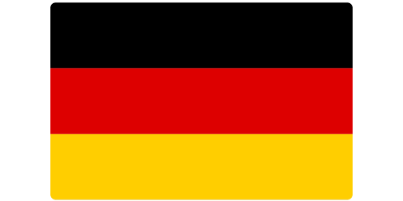
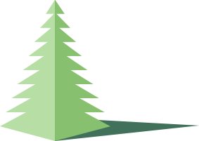

Background Pattern
Background Image
Layout Style
boxed
wide

Welcome
Deutchland Infographic

Begrüssung
Die Landkarte
Sich Vorstellen
Das Alphabet
Click Here
Click Here
Click Here
Click Here
Previous
Next
Click Here
Click Here
Click Here
Click Here
Click Here
Previous
Next
Click Here
Click Here
Click Here
Click Here
Previous
Next
Aa
Bb
Cc
Dd
Ee
Ff
Gg
Hh
Ii
Jj
Kk
Ll
Mm
Nn
Oo
Pp
Qq
Rr
Ss
Tt
Uu
Vv
Ww
Xx
Yy
Zz
Ää
Üü
Öö
Ββ
Previous
Next